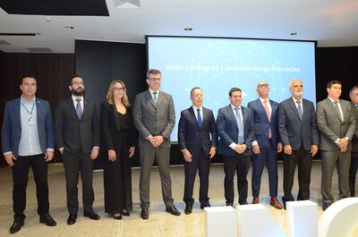
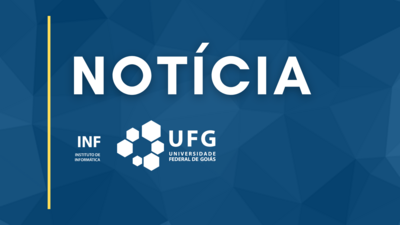
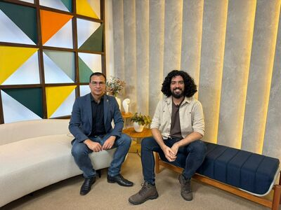
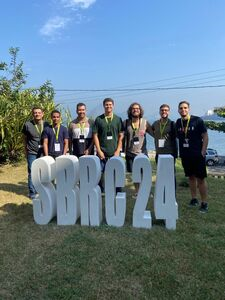
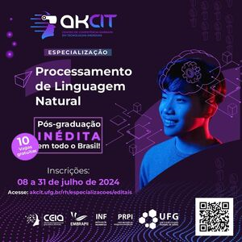
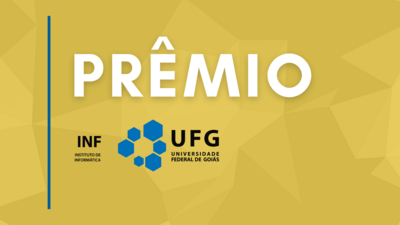

Nova Professora Visitante no Instituto de Informática |
 UFG celebra termo de cooperação técnica interinstitucional entre laboratórios de inovação de Goiás |
Prorrogado prazo para submissão de projetos para criação de novos Grupos PET |
UFG e TJGO usam Inteligência Artificial para simplificar o ‘juridiquês’ |
O Instituto dá boas vindas à professora visitante, profa. Dra. Zuly Mary Briceño, venezuelana... Saiba Mais | Criada a Rede Goiana de Laboratórios de Inovação, integrada pelo INF/UFG... Saiba Mais | Proposta de criação de novos grupos do Programa de Educação Tutorial (PET)... Saiba Mais | Plataforma lançada no fim do mês de fevereiro tem por objetivo tornar as decisões tomadas em... Saiba Mais |  Acordo de Cooperação Internacional entre a Universidade Federal de Goiás e a California State Polytechnic University, Pomona (Cal Poly Pomona). |
 UFG faz parceria com TRE-GO para desenvolvimento de ferramentas visando combate à Fake News |
Convite à Palestra Acerca dos "Desafios da Cibersegurança na Web 3.0" |
 Grupo de pesquisa do INF tem participação de destaque no SBRC |
Foi publicado o Acordo de Cooperação Internacional entre a Universidade Federal de Goiás e a Calif... Saiba Mais | Projeto pioneiro visa combater Fake News com IA e blockchain em parceria com TRE Goiás... Saiba Mais | Cada nova tecnologia que aumenta as possibilidades de conectividade ou interação virtual amplifica...Saiba Mais | Na edição de 2024, realizada em Niterói/RJ, dos 83 artigos aceitos no evento principal, 8 foram do..Saiba Mais |
|---|
Divulgação do Edital de Seleção de Alunos Regulares do Programa de Pós-Graduação em Ciência da Computação, Mestrado e Doutorado 2025 |
Especialização em Inovação, Tecnologias Emergentes e Imersivas para Saúde Digital |
 Especialização em Processamento de Linguagem Natural |
 Edital do Prêmio INF de Tese e Dissertação – Edição 2024 |
Saiba Mais | O AKCIT está com inscrições abertas para a primeira Pós-Graduação Lato Sensu em Inovação, Tecnologias Emergentes e Imersivas para Saúde Digital do país, reconhecida pelo MEC... Saiba Mais | O AKCIT está com inscrições abertas para a primeira Pós-Graduação Lato Sensu em Processamento de Linguagem Natural do país, reconhecida pelo MEC... Saiba Mais | O Programa de Pós-Graduação em Ciência da Computação (PPGCC-INF-UFG) divulga o Edital do Prêmio INF de Tese e Dissertação 2024... Saiba Mais |
|---|